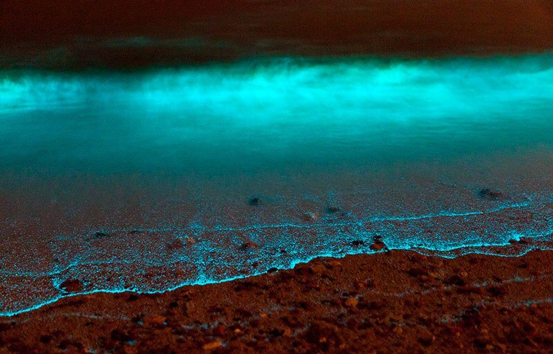

Каспийское море - величайшее в мире озеро, на границе Европы и Азии, названное морем за величину (371 тыс. км2) и солёность воды.
Самое крупное озеро планеты - Каспийское море, располагается на границе двух частей Евроазиатского материка.Одновременно Каспий является самым большим закрытым природным водоемом нашей планеты.
На севере вода почти пресная, что объясняется влиянием реки Волги . На юго-востоке вода наиболее солёная .
Каспийское побережье очень красиво. На восточной окраине тянутся густые леса. Живописные пляжи , покрытые золотым писком и галькой. Леса также тянутся до берегов моря. Влажные субтропический ландшафт берегов Каспия в летние месяцы превращает эту местность в курортную зону. Астрахань (Россия), Махачкала (Россия), Баку (Азербайджан), Ленкорань (Азербайджан), Актау, Красноводск (Туркмения), Энзели (Иран).Именно в Каспийском море добывается девять десятых всей производимой в мире чёрной икры. Самая дорогая икра – это «Алмас», икра белуги-альбиноса, изредка экспортируемая из Ирана. Упакована в банки из чистого золота.
Каспийское море по физико-географическим условиям делится на 3 части :
Каспийское море когда – то было частью моря под названием Паратетис, и его вода является остатком этого моря. В геологическом аспекте Каспий всегда считается реликтовым озером, т.е. остатком от более древнего моря. В четвертичном периоде Каспий стал закрытым морем, хотя сообщался с Аральским морем, о чем свидетельствуют обширные озерные отложения.
Интересное явление можно увидеть в южном районе Каспия — это свечение воды. Последний раз это невероятное шоу происходило в течение нескольких дней летом 1952 года. Как выяснили ученые,свечение создают микроорганизмыэндемики, обитающие здесь. Но радуют они людей этим зрелищем не всегда, а только при определенных погодных условиях. Каких именно — пока остается загадкой. Тайной для ученых остается и возникновение гигантских водяных валов, достигающих нескольких метров в высоту.
Волны,напоминающие цунами, наблюдаются в районе острова Жилой. По мнению исследователей, скорее всего, они вызваны подводными извержениями. Но пока это лишь предположение.Но, наверное, один из интересных моментов, связанных с историей Каспия, это то, что он упоминается в египетской «Книге мертвых». В древнем Египте в могилу умершего клали так называемую «Книгу мертвых» - небольшой текст, в котором отмечалось куда, по мнению египтян, уходит душа человека после смерти. Концом «путешествия» души являлось далекое восточное море - по мнению ученых, так египтяне называли именно Каспий. Почему египтяне считали, что душа умершего уходила к Каспию, так и остается загадкой»«Каспий обладает уникальной особенностью, которая именуется прецессией моря. Через каждые несколько сот лет море мелеет. В средние века оно настолько обмелело, что разделилось на две части. На всех древних средневековых картах у Каспия два названия и все думают, что это одно море называют двумя названиями – Хазарское море и Гирканское море. Но на самом деле это было два разных моря. Ровно от середины Абшеронского полуострова до Карабогазгола (Туркменбаши) проходила гряда, разделяющая два моря в результате обмеления. На севере, куда впадает Волга, было Хазарское (Каспийское) море, а на юге, куда впадает Кура, - Гирканское море. И Чингизхан со своим войском буквально прошел по гряде в середине моря. Данная гряда существует до сих пор, и если Каспий обмелеет, она обнажится. Вторая особенность Каспия - куда деваются миллиарды тонн кубометров воды? В море есть подземные трещины, огромные подземные тоннели, которые выходят к Аральскому морю. В результате подъема Каспия вся вода Аральского моря перетекла в Каспий. Сейчас идет обратный отток - Каспий мелеет и Аральское море наполняется. Кроме того, Каспийское море таит в себе мистические загадки, и одна из них -квадрат 28. Когда человек плывет на лодке, вода резко начинает уходить – образуется воронка, и лодка резко садится на дно. Я сам был очевидцем этого явления. Из квадрата 28 постоянно вылетают неопознанные летающие объекты.
Ещё вот цитата из Гоголя:
Люди воображают, что мозг находится у них в голове, нет, он приносится ветром со стороны Каспийского моря.